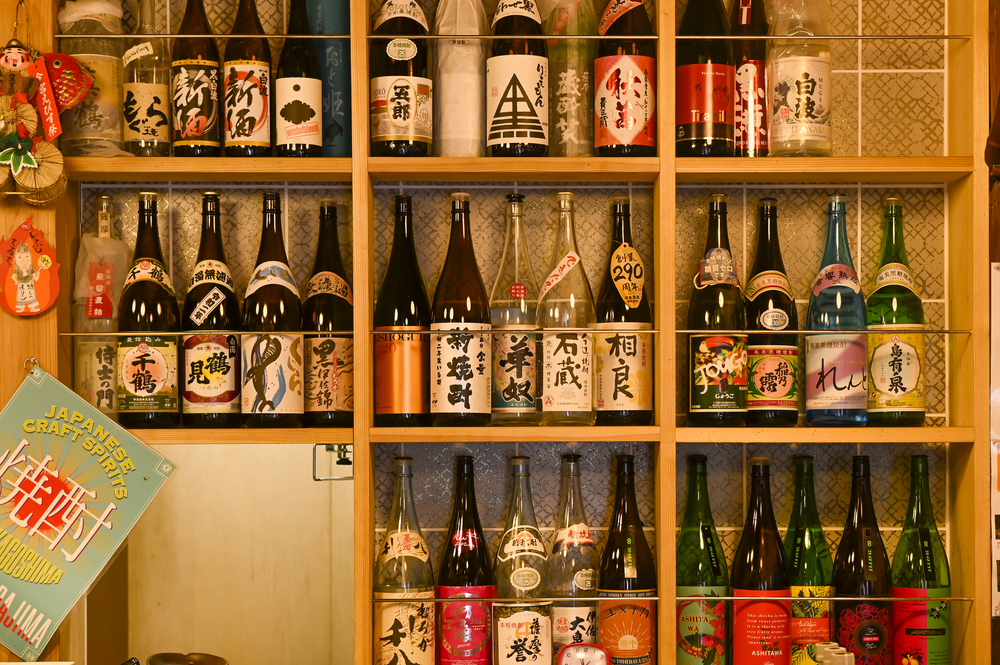

鶏飯

奄美大島の郷土料理です
©鹿児島市
「鶏飯」は、ほぐした鶏肉、干ししいたけ、錦糸卵、パパイヤの味噌漬け、みかんの皮などを、白いごはんの上にのせ、鶏ガラのスープをかけて食べる、奄美地域を代表する郷土料理です。"
白くま
鹿児島のおいしい氷菓子です
© K．P．V．B
白くま」は、削った氷に練乳をかけ、その上にチェリーやレーズン、みかん、パイン、小豆、寒天と、色とりどりのトッピングをのせた氷菓子のことです。
さつまあげ
さつまあげは魚肉のすり身を成型し、油で揚げた鹿児島の料理です
© いちき串木野市
「つけあげ」は、魚のすり身に豆腐や鹿児島県独特の酒である地酒を混ぜ、油で揚げてつくったものです。
かるかん
かるかん粉、山芋、水を使ってつくる鹿児島県の銘菓です
出典:農林水産省「うちの郷土料理」 画像提供元 : 鹿児島県
「軽羹」は原材料に自然薯(じねんじょ=山芋)をふんだんに使った羊羹(棒羊羹)のかたちをした和菓子です。
鶏刺し
鶏刺しは、南九州で昔から愛される郷土料理です
© K．P．V．B
「鶏刺し」は、表面をさっと炙った生の鶏肉をそぎ切りにし、にんにくや生姜といった薬味を添えて、南九州特有の甘い刺し身醤油で食べます。
焼酎

鹿児島では古くから焼酎が造られ、「焼酎発祥の地」としても知られています。
©鹿児島市
「焼酎」の原料には、麦や芋をはじめ、米やソバ、栗やシソなどいろんな種類があります。この原料の違いで味や風味が大きく変わります
さつまいも
中国（唐）から薩摩に伝来した芋です
© K．P．V．B
自然でやさしい甘さが魅力の秋の味覚・「さつまいも」食べるとほっこりあったかい気持ちになる、大人も子どもも大好きな食材です。
あくまき
端午の節句で食べられる鹿児島県独特の餅菓子です
© P．Ｋ．Ｎ
「あくまき」は、もち米を木や竹を燃やした灰からとった灰汁（あく）に浸した後、そのもち米を孟宗竹（もうそうちく）の皮で包んで、灰汁水で数時間煮込んでつくられます。
きびなご
鹿児島県では古くから愛され、郷土料理には欠かせない魚です。
© K．P．V．B
「きびなご」は天ぷらや南蛮漬けといった料理も人気があるが、キビナゴを手開きした「きびなごの刺身」は、新鮮なキビナゴが手に入る地域だけの特権です。
黒豚しゃぶしゃぶ

うまみと甘みがありながらさっぱりしているしゃぶしゃぶです。
© K．P．V．B
「黒豚のしゃぶしゃぶ」は鹿児島県のブランド豚である「かごしま黒豚」を薄くスライスして熱湯の鍋にさっとくぐらせ、薬味を加えたポン酢などで食べる豚料理で、鹿児島県の郷土料理です。
黒豚とんかつ
黒豚の旨みと甘みが詰まったジューシーなとんかつです。
©鹿児島市
「黒豚とんかつ」は、赤身（肉の部分）の弾力や、鹿児島では『白身』と呼ばれる脂身の甘味を感じることができる料理です。
ぶえん鰹
枕崎市のブランド鰹で、もちっとした食感がウリです。
© K．P．V．B
「ぶえん鰹」は、鮮度の良さが特徴で、鮮やかな赤身の色合いをしていて、もちっとした弾力のある食感と生臭みのないさっぱりとした味わいです。ぶえんには、新鮮なという意味があります。
 ©鹿児島市
©鹿児島市